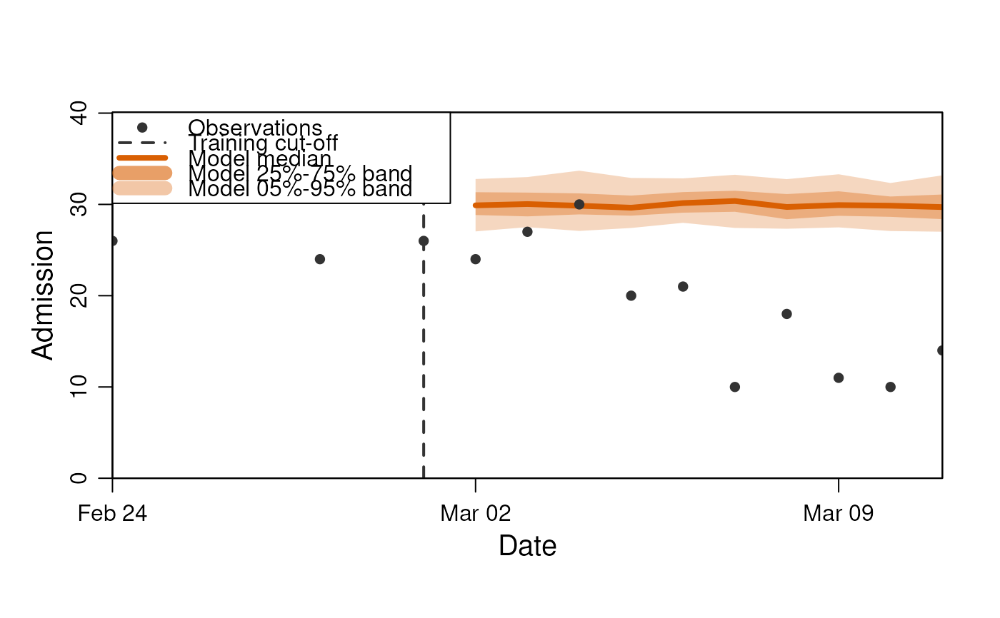

The DiseasyScoring module is responsible for defining the scoring rules (metrics) for comparing observations
with model trajectories.
Value
A new instance of the DiseasyScoring R6 class.
Super class
DiseasyBaseModule -> DiseasyScoring
Active bindings
noise_model(
list)
The noise_model currently in the module. Read-only.observables(
diseasy::DiseasyObservables)
The local copy of an DiseasyObservables module. Read-only.
Methods
Inherited methods
DiseasyScoring$new()
Creates a new instance of the DiseasyScoring R6 class.
Usage
DiseasyScoring$new(...)Arguments
...parameters sent to
DiseasyBaseModuleR6 constructor.
DiseasyScoring$set_noise_model()
Sets the DiseasyScoring module to use the specified noise model for the observations.
Usage
DiseasyScoring$set_noise_model(
observation_noise = c("poisson", "negative binomial"),
overdispersion = NULL
)DiseasyScoring$compute_likelihood()
Compute the likelihood for a given set of model trajectories
Examples
# Create a scoring module
scoring <- DiseasyScoring$new()
# By default, observation noise is assumed to be negative binomial
scoring
#> # DiseasyScoring #############################################
#> Observation noise model: poisson
# Generate model trajectory to score
conn <- DBI::dbConnect(duckdb::duckdb(), ":memory:")
#> duckdb keeps downloaded extensions and secrets in a temporary directory:
#> ℹ /tmp/Rtmpva0Col/duckdb
#> This is removed when the R session ends.
#> • Extensions are re-downloaded each session.
#> • Secrets are lost.
#> ℹ Run duckdb(shared_home = TRUE) (or create ~/.duckdb) to keep them (suitable for most users).
#> ℹ Run duckdb(shared_home = FALSE) to accept the temporary directory (and silence this message).
#> ℹ See ?duckdb_storage for details and alternatives.
observables <- DiseasyObservables$new(
diseasystore = "Simulist",
conn = conn
)
observables$set_last_queryable_date(as.Date("2020-03-01"))
model <- DiseasyModelG0$new(
observables = observables,
scoring = scoring
)
model$plot(observable = "n_admission", prediction_length = 10)

trajectories <- model$get_results(observable = "n_admission", prediction_length = 10)
# The scoring of the model trajectories are done with the "$compute_likelihood()" method:
model$scoring$compute_likelihood(trajectories)
#> # A tibble: 100 × 3
#> realisation_id weight negative_log_likelihood
#> <chr> <dbl> <dbl>
#> 1 1 1 63.4
#> 2 10 1 65.1
#> 3 100 1 64.4
#> 4 11 1 64.5
#> 5 12 1 62.5
#> 6 13 1 63.0
#> 7 14 1 57.5
#> 8 15 1 58.4
#> 9 16 1 64.0
#> 10 17 1 64.1
#> # ℹ 90 more rows
DBI::dbDisconnect(conn)
rm(scoring, conn)